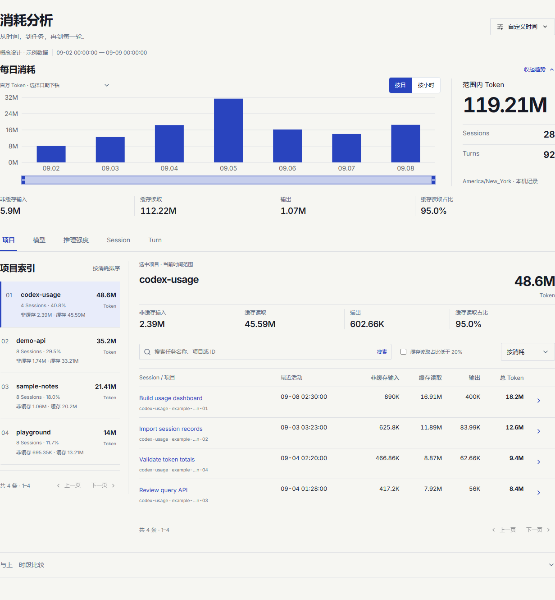

Keep following the trail.
Move from days to hours, projects to tasks, and tasks to turns. Your filters come with you.
YOUR WORK, ACCOUNTED FOR
A busy week leaves a trail. Follow it from a project to a task, down to a single turn—and across the agents doing the work.
Windows x64 · Open source · Local-first
A WEEK IN VIEW
Choose a project to explore a fixed example.
No installation or account connection needed.
A peak tells you when. The project breakdown tells you where.
Each task shows its own tokens. Cache reads are already part of input.
Synthetic data · This is a curated product example. Install the app to explore your own local history.
Move from days to hours, projects to tasks, and tasks to turns. Your filters come with you.
Compare periods and locate the projects, models, or tasks contributing to an increase.
Ask which tasks used the most tokens or how much a task delegated. The included Skill queries your local data.
THE LOCAL APPLICATION
Real application captures. Synthetic records.
The current application interface is in Chinese.

MAKE IT YOURS
Let your agent install Codex Usage and its Skill.
Then open the dashboard and follow your own trail.
Windows x64 · Node.js 26.7.0+
The installer can set up a user-level Node runtime.
Install Codex Usage using https://github.com/Cusnd/codex-usage/blob/main/docs/INSTALL_FOR_AGENTS.md, install its Skill, and show me how to open the dashboard.
Read the installation guide ↗The app reads your existing Codex records without changing them. Usage history stays on your computer.
Local history and account limits are separate. Optional API reference costs are estimates, not subscription charges.